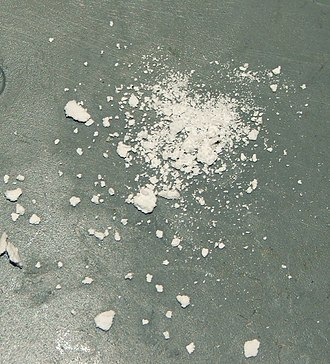

Rellenos Materiales
Los rellenos son partículas añadidas a un material (plásticos, material compuesto, hormigón) para reducir el consumo de un material más caro o para mejorar algunas propiedades del material mezclado. En todo el mundo son usados más de 53 millones de toneladas de rellenos, con una suma total de aproximadamente €16 mil millones, en diferentes áreas de aplicación tales como papel, plásticos, gomas, pinturas, recubrimientos, adhesivos y sellantes. Como tal, los rellenos, producidos por más de 700 compañías, se sitúan entre las mayores materias materias primas en el mundo y están presentes en una variedad de bienes para las necesidades del consumidor diario.
Anteriormente, los rellenos fueron utilizados para productos finales más económicos, donde son llamados extendedores. Entre los 21 rellenos más importantes, el carbonato de calcio posee la participación de mercado más grande y es principalmente usado en el sector de plásticos. Mientras la industria plástica mayoritariamente consume carbonato de calcio molido, la industria de papel utiliza principalmente carbonato de calcio precipitado que es derivado de minerales naturales. Harina de madera y serrín son utilizados como relleno en el plástico termoestable. En algunos casos, los rellenos también realzan las propiedades de los productos, por ejemplo en los compuestos. En tales casos, una interacción química beneficiosa es desarrollada entre el material anfitrión y el relleno. Como resultado, se han desarrollado un grupo de tipos optimizados de rellenos, nano-rellenos o productos de superficie tratada.
Arriba